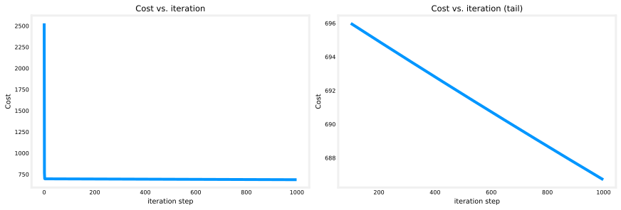

import copy
import math
import numpy as np
import matplotlib.pyplot as plt
plt.style.use("../../deeplearning.mplstyle")
np.set_printoptions(precision=2)Gradient Descent for Multiple Linear Regression
machine-learning
supervised-learning
regression
You have learned about gradient descent, multiple linear regression, and vectorization. This section ties those ideas together: gradient descent for a…
Putting It Together
You have learned about gradient descent, multiple linear regression, and vectorization. This section ties those ideas together: gradient descent for a model with many features, using vector notation to keep the math compact.
The algorithm itself is almost the same as univariate linear regression. The main change is that you now update many weights \(w_1, w_2, \ldots, w_n\) instead of a single \(w\), and each derivative uses the matching feature \(x_j^{(i)}\) instead of \(x^{(i)}\).
Review Questions
1. Which three topics from earlier in this week does this section combine?
TipAnswer
Gradient descent, multiple linear regression, and vectorization.
1. What is the main difference between gradient descent for one feature and gradient descent for multiple features?
TipAnswer
With multiple features, you update each weight \(w_j\) separately (for \(j = 1, \ldots, n\)), and each derivative uses the corresponding feature \(x_j^{(i)}\) instead of a single \(x^{(i)}\).
Vector Notation Review
In multiple linear regression, the model has parameters \(w_1, w_2, \ldots, w_n\) plus a bias \(b\). Instead of treating each \(w_j\) as a completely separate symbol, we collect all the weights into a parameter vector \(\vec{w}\) of length \(n\):
\[ \vec{w} = \begin{bmatrix} w_1 & w_2 & \cdots & w_n \end{bmatrix} \]
The bias \(b\) is still a single number, just as before. The input for one training example is also a vector \(\vec{x}^{(i)}\) with \(n\) features.
Using the dot product, the model becomes:
\[ f_{\vec{w},b}(\vec{x}) = \vec{w} \cdot \vec{x} + b \]
The dot here means the usual dot product: multiply matching components and add them up. Expanded out, this is the same as \(w_1 x_1 + w_2 x_2 + \cdots + w_n x_n + b\).
Review Questions
1. If a model has 4 features, what is the length of the parameter vector \(\vec{w}\)?
TipAnswer
- The vector \(\vec{w}\) has one entry for each feature: \(w_1, w_2, w_3, w_4\).
1. How is \(f_{\vec{w},b}(\vec{x}) = \vec{w} \cdot \vec{x} + b\) related to \(w_1 x_1 + w_2 x_2 + \cdots + w_n x_n + b\)?
TipAnswer
They are the same model. The dot product is just a compact way to write the sum of products \(w_j x_j\) across all features.
Cost Function with Vector Parameters
The squared error cost function for linear regression can be written with all the individual weights:
\[ J(w_1, w_2, \ldots, w_n, b) \]
Instead of listing every \(w_j\) separately, we write the cost as a function of the parameter vector \(\vec{w}\) and the scalar \(b\):
\[ J(\vec{w}, b) = \frac{1}{2m} \sum_{i=1}^{m} \left(f_{\vec{w},b}(\vec{x}^{(i)}) - y^{(i)}\right)^2 \]
Here \(J\) takes a vector \(\vec{w}\) and a number \(b\) as input, and returns a single number (the cost). The formula inside the sum is the same squared error as before; only the notation for the parameters has changed.
Review Questions
1. What are the inputs to \(J(\vec{w}, b)\), and what does it return?
TipAnswer
The inputs are the parameter vector \(\vec{w}\) and the bias \(b\). The output is a single number: the cost (average squared prediction error on the training set).
1. Does changing from \(J(w_1, \ldots, w_n, b)\) to \(J(\vec{w}, b)\) change the actual cost calculation?
TipAnswer
No. It is the same cost function. We are only grouping the weights into a vector for cleaner notation.
Gradient Descent Update Rules
Gradient descent repeatedly updates each parameter to reduce the cost. In general, for any weight \(w_j\):
\[ w_j \leftarrow w_j - \alpha \frac{\partial}{\partial w_j} J(\vec{w}, b) \]
Here \(\alpha\) is the learning rate and \(J(\vec{w}, b)\) is the cost defined above. After updating all the \(w_j\) values, you update \(b\) as before.
Univariate Case (One Feature)
When there is only one feature, the model is \(f_{w,b}(x) = wx + b\). Gradient descent uses two update rules:
\[ w \leftarrow w - \alpha \frac{\partial}{\partial w} J(w, b) \]
\[ b \leftarrow b - \alpha \frac{\partial}{\partial b} J(w, b) \]
For the squared error cost, the derivatives work out to:
\[ \frac{\partial J(w,b)}{\partial w} = \frac{1}{m}\sum_{i=1}^{m}\left(f_{w,b}(x^{(i)}) - y^{(i)}\right) \cdot x^{(i)} \]
\[ \frac{\partial J(w,b)}{\partial b} = \frac{1}{m}\sum_{i=1}^{m}\left(f_{w,b}(x^{(i)}) - y^{(i)}\right) \]
Notice the error term \(f_{w,b}(x^{(i)}) - y^{(i)}\) (prediction minus target). The derivative for \(w\) also multiplies by the feature value \(x^{(i)}\).
Multiple Features (\(n \geq 2\))
With \(n\) features, you update each \(w_j\) separately. For \(j = 1\):
\[ w_1 \leftarrow w_1 - \alpha \frac{\partial}{\partial w_1} J(\vec{w}, b) \]
The derivative with respect to \(w_1\) looks very similar to the univariate case:
\[ \frac{\partial J(\vec{w},b)}{\partial w_1} = \frac{1}{m}\sum_{i=1}^{m}\left(f_{\vec{w},b}(\vec{x}^{(i)}) - y^{(i)}\right) \cdot x_1^{(i)} \]
Compare the two cases side by side:
| Univariate (\(n = 1\)) | Multiple features (\(j = 1\)) | |
|---|---|---|
| Weight updated | \(w\) | \(w_1\) |
| Error term | \(f_{w,b}(x^{(i)}) - y^{(i)}\) | \(f_{\vec{w},b}(\vec{x}^{(i)}) - y^{(i)}\) |
| Feature in derivative | \(x^{(i)}\) | \(x_1^{(i)}\) |
The pattern is the same: the error term is still prediction minus target, but \(w\) and \(x\) are now vectors, and the derivative for \(w_j\) uses the matching feature \(x_j^{(i)}\).
For \(j = 2, 3, \ldots, n\), repeat the same update with \(w_j\) and \(x_j^{(i)}\):
\[ \frac{\partial J(\vec{w},b)}{\partial w_j} = \frac{1}{m}\sum_{i=1}^{m}\left(f_{\vec{w},b}(\vec{x}^{(i)}) - y^{(i)}\right) \cdot x_j^{(i)} \]
\[ w_j \leftarrow w_j - \alpha \frac{\partial J(\vec{w},b)}{\partial w_j} \]
The update for \(b\) is unchanged:
\[ \frac{\partial J(\vec{w},b)}{\partial b} = \frac{1}{m}\sum_{i=1}^{m}\left(f_{\vec{w},b}(\vec{x}^{(i)}) - y^{(i)}\right) \]
\[ b \leftarrow b - \alpha \frac{\partial J(\vec{w},b)}{\partial b} \]
Putting it all together, one iteration of gradient descent for multiple linear regression is:
\[ \text{repeat until convergence: } \begin{cases} w_j \leftarrow w_j - \alpha \dfrac{\partial J(\vec{w},b)}{\partial w_j} & \text{for } j = 1, \ldots, n \\[8pt] b \leftarrow b - \alpha \dfrac{\partial J(\vec{w},b)}{\partial b} \end{cases} \]
As in the univariate case, update all parameters simultaneously: compute every new \(w_j\) and the new \(b\) from the current values, then assign them together. Do not update one weight and then use that new value while computing the next derivative.
If you implement these updates (or a vectorized version in NumPy), you have gradient descent for multiple linear regression.
Review Questions
1. In the derivative for \(w_1\), what replaces \(x^{(i)}\) from the univariate case?
TipAnswer
\(x_1^{(i)}\), the value of the first feature in the \(i\)-th training example.
1. How many separate update rules do you need for the weights when \(n = 5\)?
TipAnswer
Five, one for each \(w_j\) where \(j = 1, 2, 3, 4, 5\). You also update \(b\) separately.
1. Does the update rule for \(b\) change when you go from one feature to many features?
TipAnswer
No. The formula for \(\partial J / \partial b\) is the same shape: average of the prediction errors \((f - y)\) over all training examples, without multiplying by a feature value.
1. What does the error term \(f_{\vec{w},b}(\vec{x}^{(i)}) - y^{(i)}\) represent?
TipAnswer
The difference between the model prediction and the actual target for training example \(i\). It appears in every derivative (for each \(w_j\) and for \(b\)).
Normal Equation (Side Note)
Before moving on, here is a brief note on an alternative way to find \(\vec{w}\) and \(b\) for linear regression.
Gradient descent is a general method: it can minimize the cost \(J\) for linear regression and also works for many other learning algorithms you will see later (logistic regression, neural networks, and more).
There is another approach called the normal equation. It solves for \(\vec{w}\) and \(b\) in one step using advanced linear algebra, without running an iterative gradient descent loop. Some mature machine learning libraries may use the normal equation on the backend when you call linear regression.
However, the normal equation has important limitations:
- Not general. Unlike gradient descent, it applies only to linear regression. It does not extend to logistic regression, neural networks, or most other algorithms in this specialization.
- Slow with many features. When the number of features is large, the normal equation becomes computationally expensive.
Almost no machine learning practitioners implement the normal equation themselves. If you hear the term in a job interview, it refers to this closed-form linear algebra solution. You do not need to know the details of how it works.
For implementing linear regression yourself, and for most other learning algorithms, gradient descent is the better choice.
Review Questions
1. Can the normal equation be used to train a neural network?
TipAnswer
No. The normal equation works only for linear regression. Neural networks and most other algorithms require iterative methods like gradient descent.
1. Why might a machine learning library use the normal equation even though you should implement gradient descent yourself?
TipAnswer
Mature libraries can use optimized linear algebra routines to solve for \(\vec{w}\) and \(b\) in one shot for standard linear regression. That is an implementation detail on the backend, not something you typically code by hand.
1. For learning algorithms in this course (including linear regression you implement yourself), which method is preferred?
TipAnswer
Gradient descent. It is general, scales to many algorithms, and is what you will implement in practice.
What Comes Next
You now have the core pieces of multiple linear regression, one of the most widely used learning algorithms in the world. The math and the gradient descent update rules are in place.
The lab below walks through the Python implementation: defining the model, computing cost, and running gradient descent with NumPy. If any of the code feels new, review the vectorization lab for a refresher.
There is still more to make multiple linear regression work well in practice. Upcoming videos cover tricks such as feature scaling and choosing the learning rate \(\alpha\) appropriately. Those small adjustments can make gradient descent converge much faster and more reliably.
Lab: Multiple Variable Linear Regression
In this lab, you extend the routines from earlier labs to support multiple features. Several functions are updated, so the lab looks long, but most changes are small adjustments to code you have already seen.
Goals
In this lab, you will:
- extend data structures to hold multiple features per example
- rewrite prediction, cost, and gradient routines for multiple variables
- use NumPy
np.dotto vectorize predictions - run batch gradient descent and plot cost over iterations
Setup
We use NumPy for arrays and math, Matplotlib for plotting, and copy so gradient_descent does not modify the initial parameters in place.
Problem Statement
We use the housing price example again. This time each house has four features: size (sqft), number of bedrooms, number of floors, and age (years). Unlike earlier labs, size is in sqft rather than 1000 sqft. That difference in scale will cause problems for gradient descent, which you will fix in the next lab on feature scaling.
| Size (sqft) | Bedrooms | Floors | Age (years) | Price ($1000s) |
|---|---|---|---|---|
| 2104 | 5 | 1 | 45 | 460 |
| 1416 | 3 | 2 | 40 | 232 |
| 852 | 2 | 1 | 35 | 178 |
We will build a linear regression model on this data and then predict prices for new houses.
X_train = np.array([[2104, 5, 1, 45], [1416, 3, 2, 40], [852, 2, 1, 35]])
y_train = np.array([460, 232, 178])Here X_train is a 2-D NumPy array (matrix) with \(m = 3\) rows (examples) and \(n = 4\) columns (features). y_train is a 1-D array of target prices.
Training Matrix X_train
Each row of X_train is one training example \(\vec{x}^{(i)}\). With \(m\) examples and \(n\) features, the matrix has shape \((m, n)\).
In lecture notation, example \(i\) has features \(x_1^{(i)}, x_2^{(i)}, \ldots, x_n^{(i)}\). In Python, the same values live in X_train[i, 0], X_train[i, 1], and so on (indices start at 0).
print(f"X Shape: {X_train.shape}, X Type: {type(X_train)}")
print(X_train)
print(f"y Shape: {y_train.shape}, y Type: {type(y_train)}")
print(y_train)X Shape: (3, 4), X Type: <class 'numpy.ndarray'>
[[2104 5 1 45]
[1416 3 2 40]
[ 852 2 1 35]]
y Shape: (3,), y Type: <class 'numpy.ndarray'>
[460 232 178]Parameters \(\vec{w}\) and \(b\)
The weight vector \(\vec{w}\) has one entry per feature (\(n = 4\) here). The bias \(b\) is still a single number. For demonstration, we load parameters that are already close to optimal:
b_init = 785.1811367994083
w_init = np.array([0.39133535, 18.75376741, -53.36032453, -26.42131618])
print(f"w_init shape: {w_init.shape}, b_init type: {type(b_init)}")w_init shape: (4,), b_init type: <class 'float'>In code, w_init is a 1-D NumPy vector with shape (4,).
Model Prediction With Multiple Variables
The model is:
\[ f_{\vec{w},b}(\vec{x}) = \vec{w} \cdot \vec{x} + b \]
which expands to \(w_1 x_1 + w_2 x_2 + \cdots + w_n x_n + b\). We will implement prediction two ways: a loop over features, then np.dot.
Single Prediction, Element by Element
A direct extension of the univariate case loops over each feature, multiplies by its weight, and adds \(b\) at the end.
def predict_single_loop(x, w, b):
"""
Single prediction using linear regression (loop over features).
Args:
x (ndarray): Shape (n,) example with multiple features
w (ndarray): Shape (n,) model parameters
b (scalar): model parameter
Returns:
p (scalar): prediction
"""
n = x.shape[0]
p = 0
for i in range(n):
p_i = x[i] * w[i]
p = p + p_i
p = p + b
return pTest on the first training example:
x_vec = X_train[0, :]
print(f"x_vec shape {x_vec.shape}, x_vec value: {x_vec}")
f_wb = predict_single_loop(x_vec, w_init, b_init)
print(f"f_wb shape {f_wb.shape}, prediction: {f_wb}")x_vec shape (4,), x_vec value: [2104 5 1 45]
f_wb shape (), prediction: 459.9999976194083x_vec is a 1-D vector with 4 elements. The prediction f_wb is a scalar.
Single Prediction, Vectorized
The same formula can be written as a dot product. NumPy np.dot computes \(\vec{w} \cdot \vec{x}\) in one call.
def predict(x, w, b):
"""
Single prediction using linear regression (vectorized).
Args:
x (ndarray): Shape (n,) example with multiple features
w (ndarray): Shape (n,) model parameters
b (scalar): model parameter
Returns:
p (scalar): prediction
"""
p = np.dot(x, w) + b
return px_vec = X_train[0, :]
print(f"x_vec shape {x_vec.shape}, x_vec value: {x_vec}")
f_wb = predict(x_vec, w_init, b_init)
print(f"f_wb shape {f_wb.shape}, prediction: {f_wb}")x_vec shape (4,), x_vec value: [2104 5 1 45]
f_wb shape (), prediction: 459.9999976194083The result matches the loop version. Going forward, use np.dot for speed and simplicity.
Compute Cost With Multiple Variables
The cost function is the same squared error as before, now with vector parameters:
\[ J(\vec{w}, b) = \frac{1}{2m} \sum_{i=1}^{m} \left(f_{\vec{w},b}(\vec{x}^{(i)}) - y^{(i)}\right)^2 \]
Below is the standard course pattern: loop over all \(m\) examples, compute each prediction with np.dot, and accumulate squared errors.
def compute_cost(X, y, w, b):
"""
Compute cost for multiple-variable linear regression.
Args:
X (ndarray (m,n)): Data, m examples with n features
y (ndarray (m,)) : target values
w (ndarray (n,)) : model parameters
b (scalar) : model parameter
Returns:
cost (scalar): cost J(w, b)
"""
m = X.shape[0]
cost = 0.0
for i in range(m):
f_wb_i = np.dot(X[i], w) + b
cost = cost + (f_wb_i - y[i]) ** 2
cost = cost / (2 * m)
return costWith the near-optimal w_init and b_init, the cost should be essentially zero:
cost = compute_cost(X_train, y_train, w_init, b_init)
print(f"Cost at optimal w: {cost}")Cost at optimal w: 1.5578904045996674e-12Expected result: about 1.56e-12.
Gradient Descent With Multiple Variables
Recall the update rules from earlier in this page. For each weight \(w_j\):
\[ w_j \leftarrow w_j - \alpha \frac{\partial J(\vec{w}, b)}{\partial w_j} \]
and for the bias:
\[ b \leftarrow b - \alpha \frac{\partial J(\vec{w}, b)}{\partial b} \]
The derivatives are:
\[ \frac{\partial J(\vec{w},b)}{\partial w_j} = \frac{1}{m} \sum_{i=1}^{m} \left(f_{\vec{w},b}(\vec{x}^{(i)}) - y^{(i)}\right) x_j^{(i)} \]
\[ \frac{\partial J(\vec{w},b)}{\partial b} = \frac{1}{m} \sum_{i=1}^{m} \left(f_{\vec{w},b}(\vec{x}^{(i)}) - y^{(i)}\right) \]
All parameters are updated simultaneously each iteration.
Implementing compute_gradient
The implementation below loops over examples. For each example it computes the error err = f - y, accumulates dj_db, and loops over features to accumulate each dj_dw[j].
def compute_gradient(X, y, w, b):
"""
Compute the gradient for linear regression with multiple variables.
Args:
X (ndarray (m,n)): Data, m examples with n features
y (ndarray (m,)) : target values
w (ndarray (n,)) : model parameters
b (scalar) : model parameter
Returns:
dj_db (scalar): gradient of cost w.r.t. b
dj_dw (ndarray (n,)): gradient of cost w.r.t. each w_j
"""
m, n = X.shape
dj_dw = np.zeros((n,))
dj_db = 0.0
for i in range(m):
err = (np.dot(X[i], w) + b) - y[i]
for j in range(n):
dj_dw[j] = dj_dw[j] + err * X[i, j]
dj_db = dj_db + err
dj_dw = dj_dw / m
dj_db = dj_db / m
return dj_db, dj_dwCheck the gradient at the near-optimal starting point (should be close to zero):
tmp_dj_db, tmp_dj_dw = compute_gradient(X_train, y_train, w_init, b_init)
print(f"dj_db at initial w,b: {tmp_dj_db}")
print(f"dj_dw at initial w,b:\n {tmp_dj_dw}")dj_db at initial w,b: -1.6739251122999121e-06
dj_dw at initial w,b:
[-2.73e-03 -6.27e-06 -2.22e-06 -6.92e-05]Expected: dj_db near -1.67e-06, dj_dw near [-2.73e-03, -6.27e-06, -2.22e-06, -6.92e-05].
Implementing gradient_descent
This function repeats gradient steps num_iters times. It uses copy.deepcopy on w so the caller’s initial weights are not modified. After each update it records the cost in J_history for plotting.
def gradient_descent(X, y, w_in, b_in, cost_function, gradient_function, alpha, num_iters):
"""
Perform batch gradient descent to learn w and b.
Args:
X (ndarray (m,n)) : Data, m examples with n features
y (ndarray (m,)) : target values
w_in (ndarray (n,)) : initial model parameters
b_in (scalar) : initial model parameter
cost_function : function to compute cost
gradient_function : function to compute the gradient
alpha (float) : learning rate
num_iters (int) : number of iterations
Returns:
w (ndarray (n,)) : updated parameters
b (scalar) : updated bias
J_history (list) : cost at each iteration
"""
J_history = []
w = copy.deepcopy(w_in)
b = b_in
for i in range(num_iters):
dj_db, dj_dw = gradient_function(X, y, w, b)
w = w - alpha * dj_dw
b = b - alpha * dj_db
if i < 100000:
J_history.append(cost_function(X, y, w, b))
if i % math.ceil(num_iters / 10) == 0:
print(f"Iteration {i:4d}: Cost {J_history[-1]:8.2f} ")
return w, b, J_historyRun Gradient Descent
Start from \(w = 0\) and \(b = 0\), run 1000 iterations with learning rate \(\alpha = 5 \times 10^{-7}\), then compare predictions to targets.
initial_w = np.zeros_like(w_init)
initial_b = 0.0
iterations = 1000
alpha = 5.0e-7
w_final, b_final, J_hist = gradient_descent(
X_train, y_train, initial_w, initial_b,
compute_cost, compute_gradient, alpha, iterations
)
print(f"b,w found by gradient descent: {b_final:0.2f}, {w_final}")
m, _ = X_train.shape
for i in range(m):
pred = np.dot(X_train[i], w_final) + b_final
print(f"prediction: {pred:0.2f}, target value: {y_train[i]}")Iteration 0: Cost 2529.46
Iteration 100: Cost 695.99
Iteration 200: Cost 694.92
Iteration 300: Cost 693.86
Iteration 400: Cost 692.81
Iteration 500: Cost 691.77
Iteration 600: Cost 690.73
Iteration 700: Cost 689.71
Iteration 800: Cost 688.70
Iteration 900: Cost 687.69
b,w found by gradient descent: -0.00, [ 0.2 0. -0.01 -0.07]
prediction: 426.19, target value: 460
prediction: 286.17, target value: 232
prediction: 171.47, target value: 178Expected: \(b \approx 0\), \(\vec{w} \approx [0.2, 0, -0.01, -0.07]\), predictions roughly 426, 286, and 171 (targets 460, 232, 178).
These results are not great. Cost is still falling and predictions are off. The features have very different scales (sqft in thousands vs bedroom counts in single digits), which makes gradient descent slow. The next lab on feature scaling addresses this.
Plot Cost vs Iteration
The left plot shows the full cost curve. The right plot zooms in after iteration 100 to show the tail more clearly.
%config InlineBackend.figure_formats = ["svg"]
fig, (ax1, ax2) = plt.subplots(1, 2, constrained_layout=True, figsize=(12, 4))
ax1.plot(J_hist)
ax2.plot(100 + np.arange(len(J_hist[100:])), J_hist[100:])
ax1.set_title("Cost vs. iteration")
ax2.set_title("Cost vs. iteration (tail)")
ax1.set_ylabel("Cost")
ax2.set_ylabel("Cost")
ax1.set_xlabel("iteration step")
ax2.set_xlabel("iteration step")
plt.show()
Cost is still decreasing after 1000 steps, which confirms that a better learning rate and feature scaling would help.
Lab Summary
In this lab you:
- extended prediction, cost, and gradient code to multiple features
- used
np.dotfor vectorized predictions - ran batch gradient descent and inspected cost over iterations
Multiple linear regression is now implemented in code. The next topic is how to scale features and tune the learning rate so gradient descent converges faster.
Review Questions
1. In the training set below, what is \(x_4^{(3)}\)? (Enter an integer.)
| Size (sqft) | Bedrooms | Floors | Age (years) | Price ($1000s) |
|---|---|---|---|---|
| 2104 | 5 | 1 | 45 | 460 |
| 1416 | 3 | 2 | 40 | 232 |
| 1534 | 3 | 2 | 30 | 315 |
| 852 | 2 | 1 | 36 | 178 |
TipAnswer
30. The notation \(x_4^{(3)}\) means the 4th feature (4th column, age in years) of the 3rd training example (3rd row in the table).
1. Which of the following are potential benefits of vectorization?
It makes your code run faster
It can make your code shorter
It allows your code to run more easily on parallel compute hardware
All of the above
TipAnswer
d. Vectorization can speed up code, shorten it, and map well to parallel hardware (such as SIMD or GPU operations). All three are valid benefits.
1. True or false? To make gradient descent converge about twice as fast, a technique that almost always works is to double the learning rate \(\alpha\).
True
False
TipAnswer
b. False. Doubling the learning rate can make \(\alpha\) too large. Gradient descent may then overshoot the minimum, diverge, or fail to converge at all. Choosing a good learning rate requires care; simply doubling it is not a reliable trick.